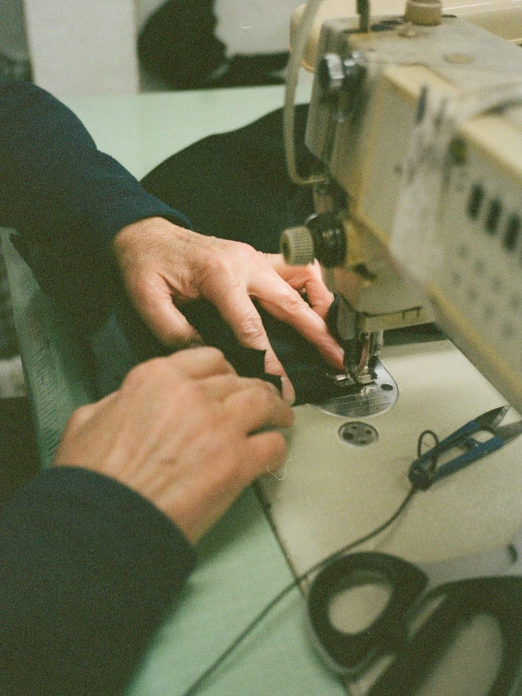
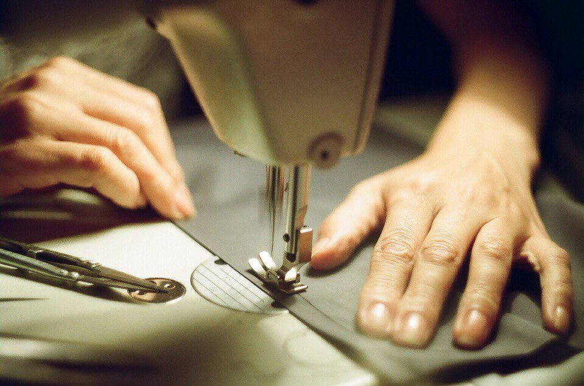

수선 요금
수선 요금은 그날 찾는 수선 다섯 가지와 맡기는 수선 아홉 가지로 나뉩니다.
그날 찾는 수선
- 바지 기장 줄임2시간6,000원
- 치마 기장 줄임3시간8,000원
- 단추 달기(1개)30분1,000원
- 단춧구멍 다시 박기1시간2,000원
- 터진 솔기 박기1시간3,000원부터
오후 6시 전에 맡기면 적힌 시간 안에 끝낸다. 토요일은 오후 3시까지 받는다.
맡기는 수선
- 청바지 기장(밑단 살림)2일10,000원
- 바지 허리 줄임·늘림2일10,000원
- 지퍼 교체(바지·치마)2일8,000원
- 패딩 찢어진 곳 덧대기2일8,000원
- 재킷 소매 기장3일15,000원
- 지퍼 교체(외투)3일18,000원
- 코트 소매 기장4일20,000원
- 재킷 품 줄임5일25,000원
- 코트 안감 교체7일50,000원

수선 기준
- 기장은 입어 보고 핀을 꽂아 잰다. 입어 볼 수 없으면 맞는 옷을 함께 가져와 그 길이를 옮긴다.
- 세탁과 수선을 함께 맡기면 세탁을 먼저 하고 수선한다. 걸리는 날은 둘 가운데 긴 쪽에 하루를 더한다.
- 지퍼와 단추는 가게에 있는 것으로 단다. 같은 것을 원하면 가져온다.
